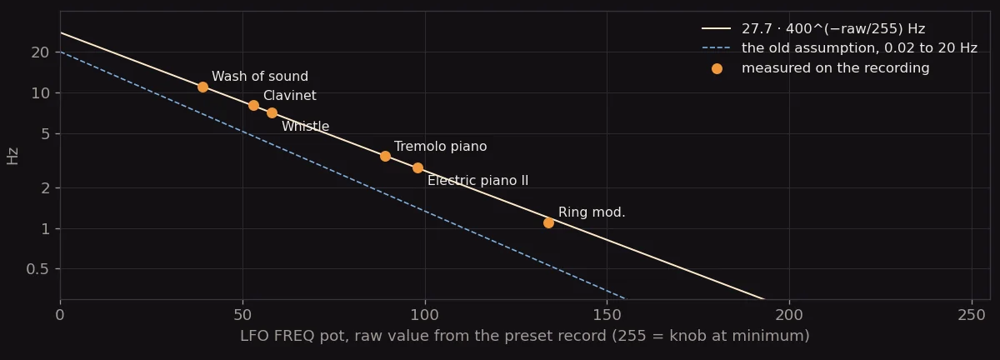
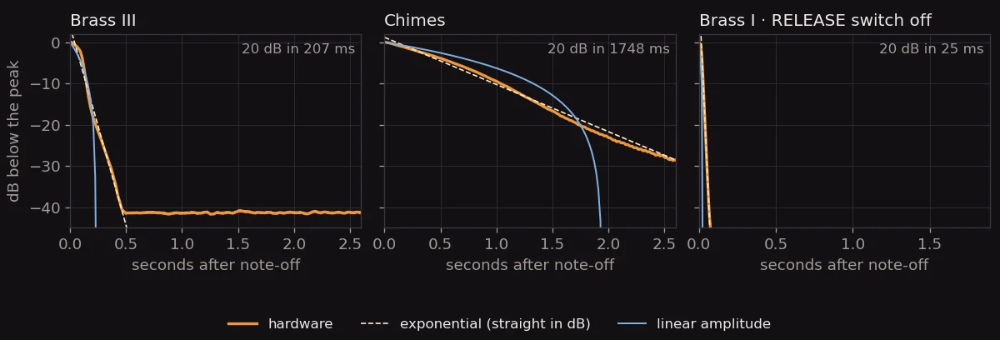
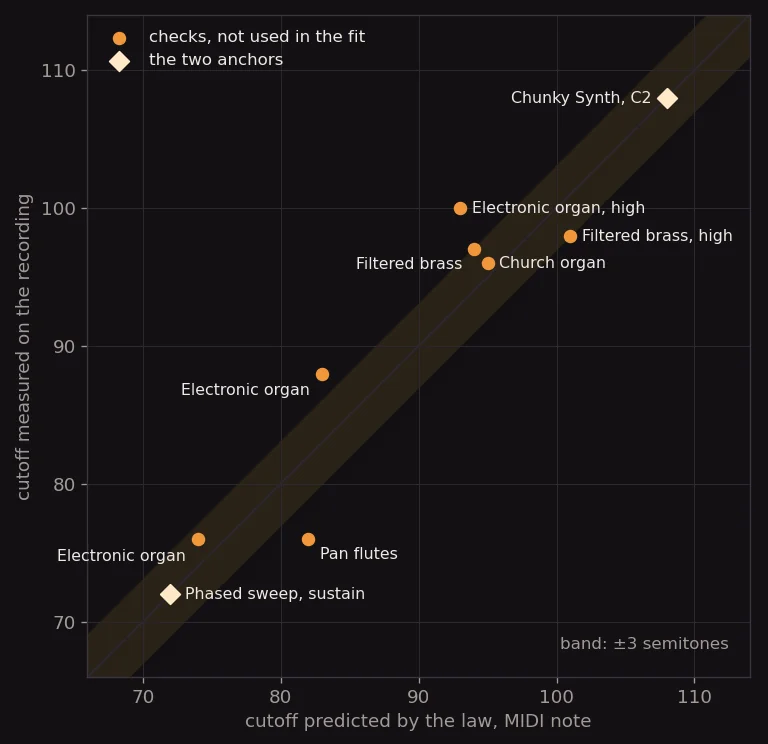
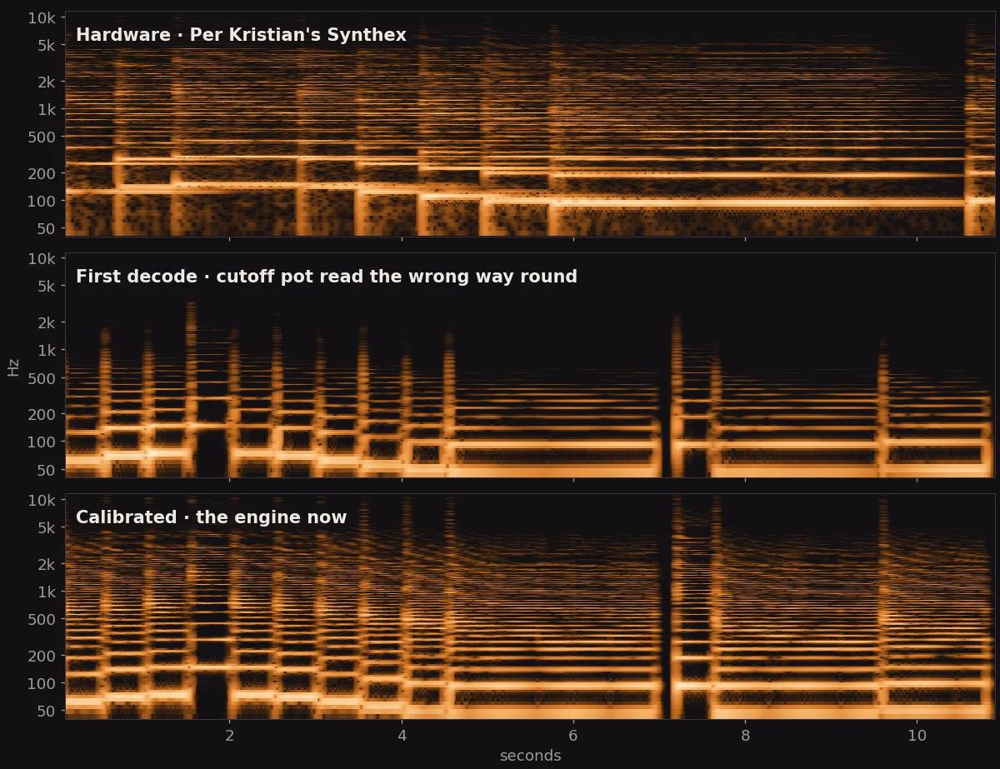
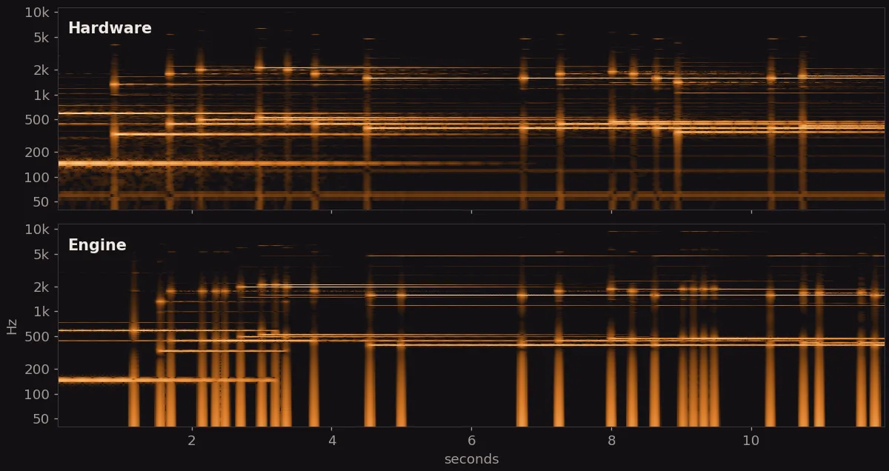
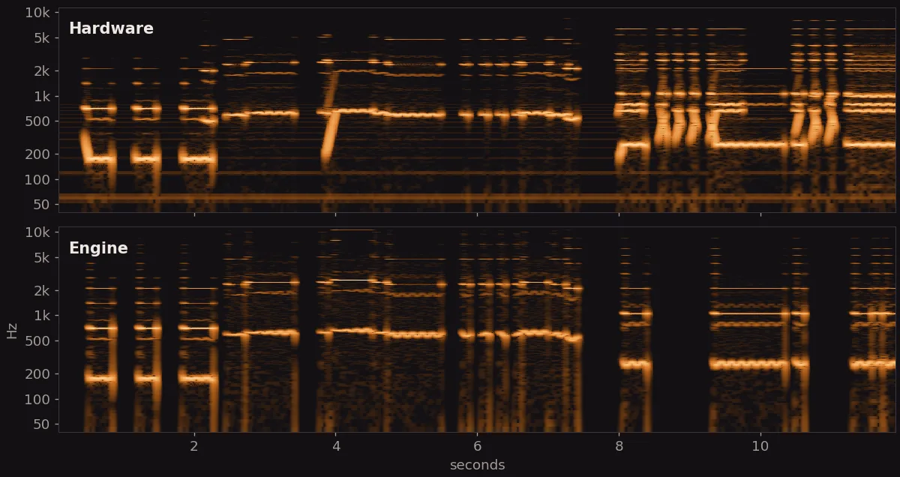
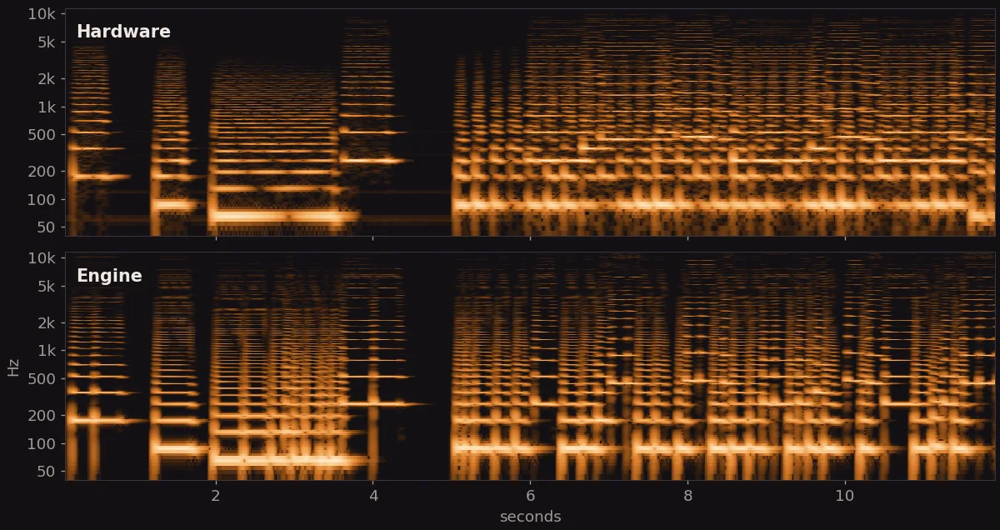
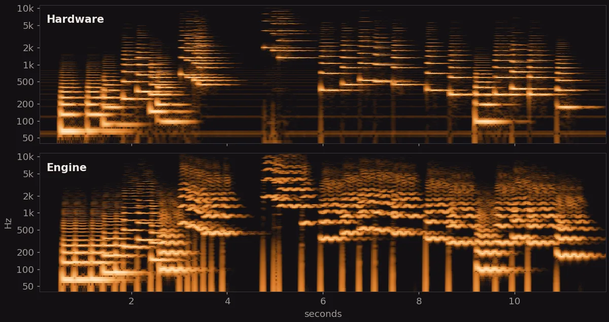

1The names and nothing else
The Synthex has eighty programs. Forty PRESETS sit in ROM and forty MEMORIES came on a cassette, and page 25 of the manual lists them all: Chunky Synth, Wah brass, Brass II, Ceilos, Church organ, Ring mod., Bass pluck, Whistle. For a long time the names were all this tribute had. Its forty presets were made by ear, from the names, from memory, and from the Cherry Audio Elka-X, whose Laser Harp is itself a recreation of program 46.
That last point matters. The Elka-X is a fine instrument, but its 608 presets are designer patches, not the ROM. When I later measured the decoded Ring mod. against a capture of the Elka-X Laser Harp it scored worse than my hand-made patch, 8.3 dB against 5.2, for the simple reason that the hand-made patch had been fitted to that capture. The reference had been the wrong instrument.
2Twenty-five bytes per sound
The firmware is on three EPROMs, and dumps of them circulate in the vintage synth firmware collection. The CPU board permutes the address and data lines, so the first job was to rebuild the 6502 image. The second was to find the presets: forty packed records of 25 bytes, 200 bits each, at $D000 on the chip marked T41. That chip is byte-identical in every dump set, MIDI and pre-MIDI firmware alike, which is as close to a guarantee as this hobby gets.
Rather than re-implement the firmware's bit unpacker and get it subtly wrong, the decoder runs the firmware's own recall routine in a 6502 simulator and reads the forty parameters it leaves in zero page. Bob Grieb's Synthex CC map, which lists the RAM address of every parameter for his MIDI retrofit, gave the parameter identities. This is the first record, program 10, Chunky Synth:
154 131 191 174 183 189 174 176 141 236 0 186 128 254 90 0 0 240 240 0
0 0 96 112 160 144 0 1 1 1 1 0 0 0 0 0 0 0 128 0Read with the map: OSC2 detuned 26 units above centre, about ten cents; both oscillators at 8' (footage code 1), both sawtooth (wave code 1), both at full volume (240); cutoff 189, key tracking 174, envelope amount 176; filter sustain 141 of 255, amplifier sustain 236; the six envelope times as four-bit steps, 0 0 6 7 10 9; and 128 at the end, the RELEASE switch on. Small surprises hid in the bits. The glide buttons are cross-wired, so the bit the panel calls OSC1 routes to OSC2. The triangle wave gets twelve semitones added in firmware to compensate for the hardware. The LFO frequency pot reads inverted: every vibrato preset had a low raw value. I noted that one and moved on. I should have stopped.
The cassette was a disappointment. Both circulating "factory presets" tapes decode cleanly, FSK at 800 and 1600 Hz with checksums that verify, but they are user banks: one has seven slots that are byte copies of ROM presets, the other three, and the names do not fit the sounds. The MEMORIES bank on this site stays a reconstruction until someone's 1982 battery RAM turns up intact.
3Everything in place and wrong
With the records decoded and the engine's knobs mapped to them, I loaded the bank and played. It was bad. Ceilos, a string pad with no filter envelope, was muffled. The organs were muffled. Bass pluck, which on the real instrument snaps, was a thud. And the Laser Harp, the sound this whole project exists for, was simply gone: a dull bass tone where the Rendez-Vous riff should cut.
The decode was not the problem. Every switch bit of Ring mod. matched what the Elka-X recreation sets: pulse 8' against pulse 2', sync, ring modulation, glide to OSC2, LFO to the second pulse width, chorus 1. The problem was the layer under the decode. The ROM says where the knobs sit. What the engine does with a knob position, how many semitones a cutoff knob spans, how fast an LFO runs at a given raw value, how long "envelope step 9" lasts, had all been assumed when the engine was written. Forty presets of real knob positions turned every assumption into an audible error at once.
4Fifteen minutes of ground truth
What was needed was the real instrument, and Per Kristian had recorded it: a run-through of all forty presets in order, fifteen minutes, mono, 56 kbps, on his sounds page. Not a laboratory recording, but one with the only property that counts: it is a Synthex playing its own ROM.
I built a small marker tool, played the file, and set a mark where each preset begins; the first ten and the last ten I am sure of, the middle twenty less so. The analysis then cut the recording into forty regions, detected the notes he plays in each, and rendered the same notes with the engine, so that a hardware clip and an engine clip could be laid side by side with the same pitches and the same timing. A spectrogram of each pair, and a stack of small measurements, did the rest.
5What the recording said
The LFO runs on an exponential pot
Six presets have an audible vibrato or tremolo, and their rates can be read straight off the harmonics. Plotted against the raw pot value they fall on one exponential within five percent, from eleven hertz for Wash of sound down to one for the slow pulse-width drift of Ring mod. The old curve was wrong by a factor of two. The depths came from running the same modulation analysis on hardware and engine renders: full-depth vibrato is ±1.3 semitones, not ±2, and full tremolo moves the level by less than five decibels, not fifteen.

The envelopes: half, straight, and exponential
The envelope times are a 16-step table set by an RC network on the voice card, and the table itself (3.1 ms up to 13.2 s) comes from pecostm32's Synthex emulator, which counts the CPU cycles the firmware waits for the attack comparator. The recording fixed the shapes. The attack reaches its peak in about half the table time. The decay is linear in control voltage and takes the table time; Phased sweep's cutoff falls in a straight line over 6.6 seconds. And the release is exponential: plotted in decibels it is a straight line for thirty decibels and more, falling twenty decibels per table time. The engine's release had been linear, which sounds like a hold followed by a drop, and it is now exponential.

The filter, and the pot that reads backwards
The cutoff was the hard one, because three things add into it: the knob, the key tracking and the envelope. The schematic gives their proportions. On the voice card the cutoff summing amplifier takes the knob through 30 kΩ, the key-tracking voltage through 43 kΩ and the envelope through 24 kΩ, so they weigh 1 : 0.70 : 1.25. The firmware gives the key tracking's shape: it writes (key − 36) × 2 to a DAC for each voice, with the KEY TRACK knob as the DAC's reference, so tracking is zero at the bottom key, C2, and the knob scales it. What was left to measure was the scale of the whole sum in semitones and where it starts.
The measurements refused to agree. Presets with no filter envelope, Ceilos and the organs, read wide open on the recording while their knob values were middling. The plucks, Bass pluck and Fast decay, had the knob near its maximum and a full envelope, which no one programs, because there is nothing left for the envelope to open. Chunky Synth at C2 wanted one answer and Phased sweep another. I had been staring at the LFO pot's inversion for two days before I tried the obvious thing: the cutoff pot reads backwards too. Raw 255 is the knob at its minimum.
Everything fell into place. The plucks became "knob near zero plus a full envelope", which is exactly how one programs a pluck. Ceilos and the organs opened up. Two anchors fixed the scale, Chunky Synth at C2 (cutoff at note 108 once the envelope has settled) and Phased sweep at its sustain (note 72), and the law then predicted seven readings it had not been fitted to, most within three semitones and none worse than seven, at the top of the range where the estimator is least reliable. Full key tracking comes out at 0.81 semitones per key, and a full envelope at about 185 semitones, which explains why the plucks snap.

6Hear the difference
Spectrograms, time left to right, frequency on a log scale from 40 Hz to 10 kHz, one amber scale for all of them so that panels compare. The hardware panels are from Per Kristian's recording; the engine panels are the web engine rendering the same notes, eight voices and the preset's chorus, exactly as the app plays them.
Ring mod.Bank 4 · program 6 · the Laser Harp

Tremolo pianoBank 1 · program 5

WhistleBank 4 · program 9

Brass IIIBank 1 · program 9

7The same presets on a pocket synth
The engine has a second life as Scintilla, an integer-only C port that runs as firmware on the M-VAVE FM-1, a pocket synth with a 240 MHz core and no floating-point unit. Its preset bank is generated from the same file as the web engine's, so the calibrated presets went straight across; the exponential release cost one multiply per sample. The port's test renders each of the eighty patches through four scenarios in both engines and holds them to within 0.1 dB of each other, and the FM-1's output, run in an emulator of its CPU, must hash-equal the host's. Both held. While the tests were rerun, one of them caught an older bug: OSC2 had been 0.66 cents flat from a rounded cents-to-semitone constant, which the synced and ring-modulated presets had been quietly paying for. Ring mod. with eight voices takes 48 % of the core.
8What is still a guess
Honesty about the residue is the point of writing this down. The decode is exact; the mapping is measured where it could be and assumed where it could not.
- Brass II's vibrato is too deep in the engine. The pitch-modulation depth was fitted on Whistle and Wash of sound, where the LFO runs at full depth; Brass II, at a lower depth, wobbles visibly more in the engine than on the hardware. Either the depth pot has a curve of its own, or his modulation wheel was somewhere I cannot see.
- The synced and ring-modulated sources differ. Ring mod. and Metallic have the right brightness now but not quite the right timbre; the engine's hard sync and ring modulation are not the Synthex's circuits.
- Mixer levels, the LFO delay curve and the glide speed curve are still assumptions, calibrated only loosely (Whistle's vibrato arrives in about the right time; Ring mod.'s glide is about 0.85 s).
- The top of the envelope table reads about twice too short on Chimes and Landing. The table is kept until a cleaner recording says otherwise.
- The middle twenty marks in the run-through are my best guess at where the presets change. The measurements above use the ends.
What would settle most of it is a recording that is not a performance: single notes across the keyboard on Ceilos, Church organ and Chunky Synth, dry, at a known level. If you own a Synthex and a microphone, you know where to find me.
